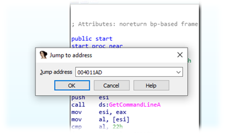
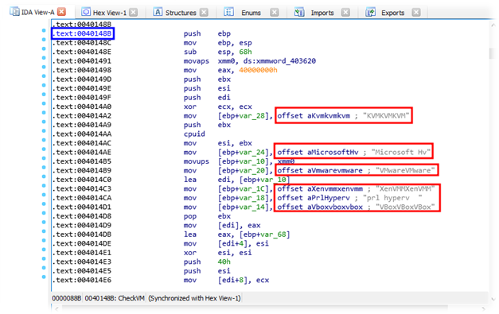
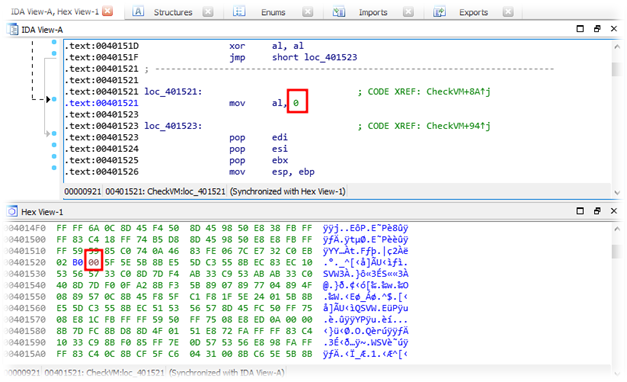
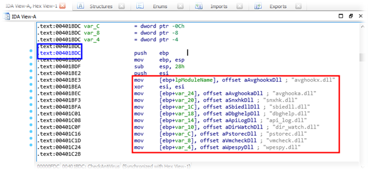
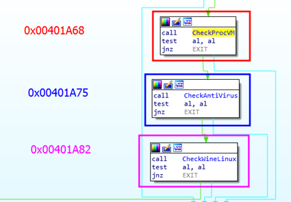
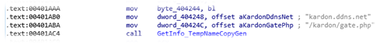
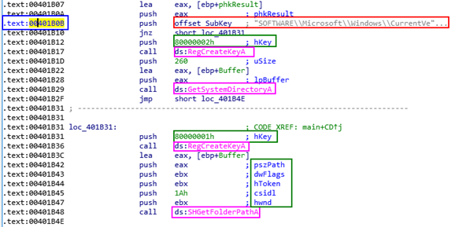
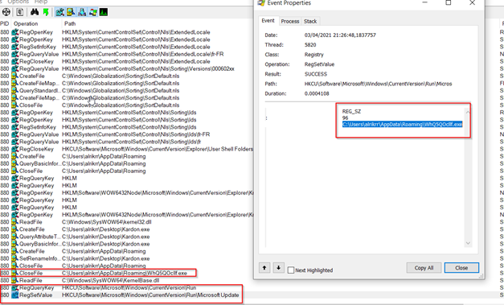

Adrien Lasalle
:date_full
Kardon Loader
Identification
| Name | kardon.exe |
|---|---|
| Hash (256) | 555675C526F80B9C89E02CA9D2C27F0EA61AD400 |
| FileType | PE 32 bit |
| TimeStamp | 5AFD5BE1 —> GMT: Thursday 17 May 2018 10:39:29 |
| FileSize | 10KB |
| ImageBase | 000011AD |
| EntryPoint(RVA) | 00400000 |
| VA(IB+RVA) | 004011AD |
Sections
There are 4 sections :
- .text
- .rdata
- .data
- .reloc
Imports
Interesting DLLs :
- urlmon.dll: URLDownloadToFileA()
- SHELL32.dll: SHGetFolderPathA()
- KERNEL32.dll: GetCommandLineA(), MoveFileExA(), WinExec(), GetCurrentProcess(), etc.
- ADVAPI32.dll: RegCreateKeyA(), RegSetValueExA(), etc.
💡 The identification of the malware is done, we have a better understanding of the malware at the moment. We can see that it uses some functions, especially the manipulation of registers and documents. We can think about a persistence on our system. A possibility to download files from the Internet with urlmon.dll. Then we can see that there is an anti-debug system on a virtual machine. This suggests that the hacker behind this malware doesn’t want us to look further into his malware. Now let’s move on to the static analysis.
Static Analysis
We start our static analysis with the Hacker Resources tool. Unfortunately, this did not give us any data. No resources are present in our malware.
We will continue using IDA Pro.
IDA Pro - Main Address
First of all, we need to jump to the main address. Sometimes you don’t need to jump, you just spawn on the main function but to do so, just press “g” and enter the VA that we find earlier.

IDA Pro - Anti-VM & Bypass
As we saw during the identification of our malware, virtual machine anti-debug functions were present.
These functions, or checks, are there to verify if the malware is running in a virtualization environment or not. In most cases, and [Spoilers] in this one as well, if the malware is running on a virtual machine, it automatically shuts down, in order to avoid it being analyzed.
Fortunately, this kind of protection is easy to bypass.
In the screenshot below you can see at address 0x0040148B a function that checks the presence of virtual environments dlls like VMWare, VirtualBox, KVM, etc.

Anti-VM check used by Kardon
At the address 0x00401521, right after the CheckVM function(0x0040148B).
This variable, to make it simple, is by default at 1 when passing in this instruction. So, if the malware is in a virtual machine, the variable will be set to 1.
The final condition would be, if variable is equal to 1, it is a virtual machine, so shutdown. If the variable is equal to 0, it’s ok, continue.
If you want to see all the function CheckVM, just press “space” when you’re on it and you’ll see all the function + instructions.
In our case, it will never be set to 1 because we will replace the 1 by a 0.
To do so, just click on the 1 from “mov al, 1” then in the hexadecimal editor integrated into IDA (Hex View-1), press F2 and change 01 by 00. Like in the example below.

Replace 01 by 00 in hexa to by-pass the Anti-VM protection.
This bypass will allow us to execute the malware during the dynamic analysis.
IDA-Pro - Anti-Virus check
At the address 0x00401BDC there is a function that we are going to call CheckAV(). This function will simply check if there are dlls related to AntiVirus protection. Like the CheckVM() function, if these dlls are in the machine, the malware will stop.

Anti-Virus dll check used by Kardon
Like the CheckVM() function, this one can be bypass too, using the same method. The instruction is located at the address 0x00401C43.
IDA-Pro - Kardon Checking so far
Here is a little recap from the checking in place in this malware ( CheckVM is not here). As we can see, these checks are coded the same way and can be bypass easily. The last one is a function that check if the malware is running inside a Wine emulator from Linux.

IDA-Pro - C&C
At the address 0x00401AB0, just before the CheckWineLinux() function we can see the C&C used by the malware.
We can also see the name of the page that is trigger, here gate.php into the Kardon folder.

This IOC is a very important information, using this we can for example block any communication to the destination of kardon.ddns.net.
IDA-Pro - Registry Key
Last part of this static analysis, at the address 0x00401B0B we can see a Registry Key and some system function used for registry key creation and manipulation.
When we start talking about manipulation of the Windows registry, the first thing that comes to our mind is the persistence of malware on the system.
Here we can see a SubKey : “SOFTWARE\Microsoft\Windows\CurrentVersion\Run”
The Holy Microsoft documentation says:
“Run and RunOnce registry keys cause programs to run each time a user logs on. The data value for a key is a command line no longer than 260 characters.”
There is also two hKey: “80000002h” & “80000002h”
The value is a const value, here It is easy to find the exact value of the hKey.
Const HKEY_CLASSES_ROOT = &H80000000
Const HKEY_CURRENT_USER = &H80000001
Const HKEY_LOCAL_MACHINE = &H80000002
Const HKEY_USERS = &H80000003
Const HKEY_CURRENT_CONFIG = &H80000005
And we can see a lot of system function such as:
- RegCreateKeyA : “Creates the specified registry key. If the key already exists in the registry, the function opens it.” Here this function is called 2 times so there is a creation and an edit.
- GetSystemDirectoryA : Retrieves the path of the system directory. The system directory contains system files such as dynamic-link libraries and drivers.
- SHGetFolderPathA : “ Gets the path of a folder identified by a CSIDL value.”

Capture of the HKEY used by Kardon
In conclusion, there is the creation of a registry key that allows the malware to execute at each login of the victim. Moreover, we can see a creation and a modification of the key.
We will see in more detail what happens in the dynamic analysis.
Dynamic Analysis
⚠️ Before executing this part, make sure you protect your system properly so as not to damage your computer. Also remember to make a snapshot of your system before each execution.
Procmon
As our malware is patched (Bypass CheckVM, CheckAV, etc.) it runs correctly on the analysis system. The first thing to do is to run Procmon with the correct filters and then run the malware. This will give us a better understanding of how it works on the system.
As suspected, we see the creation of a registry key but we also see its modification. This function takes on its full meaning when you look at what happens next. Indeed, we can see our malware being copied into %APPDATA% under a random name and then adding its new path+name into the registry key. Which is why we use the GetSystemDirectoryA function seen earlier.
This makes sense because, once executed, the Kardon.exe malware deletes itself to leave only its copy in %APPDATA%. It gets the full path of the copy into the registry Key created before. Every execution, this malware changes it name and the registry key. By the way the name of the autorun key is “Microsoft Update”.

Procmon - Conclusion
To conclude, it is possible to push this analysis even further. Indeed, since we have at our disposal the C&C and a better understanding of its behavior, it is possible to create a C&C of the same name so that Kardon communicates with it.
This will allow us to see in more detail the communications and data exchanges between the two.